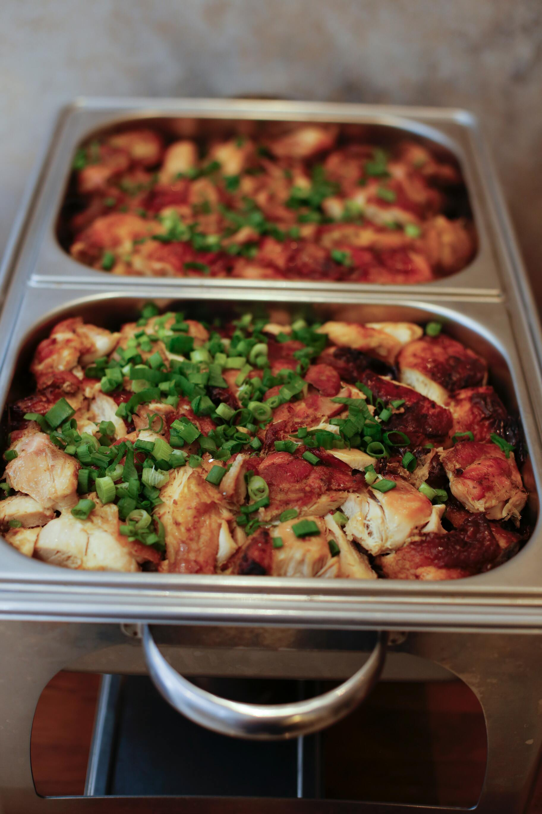

Servicios Especiales
Baby Showers
Nuestros Baby Showers incluyen: Tarjtas de Invitaciones + Almuerzo + Mesa Dulce + Decoracion de Mesa y Souvenires personalizados + Entretenimiento y Juegos + Merienda
Todo lo necesario para que vos, tu familia y amigos disfruten de estos momentos tan especiales e irrepetibles.
Contactanos y agendaremos una fecha para considerar tus prioridades y personalizar el baby shower de tu bebe.

XV
Nuestras Fiestas de XV incluyen: Book de 100 Fotos de la Quinceañera + Decoracion de Salon + Aperitivos y Cena (con vajillas incluido) + DJ, sonido e iluminacion + Mesa dulce y Postre + Souvenires, Banner de la Quinceañera y Video personalizado
Somos una empresa de catering que pone en primer lugar los lazos familiares y afectivos, por eso queremos brindarte el mejor servicio posible para una noche inolvidable con tu familia y amigos que siempre quedará grabada en nuestro corazon.

Casamientos
Nuestros Casamientos incluyen: Tarjetas de Invitaciones + Book de 100 Fotos para los novios + Decoracion de Salon o Iglesia + Ramo de Flores a eleccion de la Novia + Torta para los Novios
Tambien podes icluir: Aperitivos y Cena (con vajillas incluido) + DJ, sonido e iluminacion + Mesa Dulce y Postre + Souvenires
Y como sabemos lo maravilloso e importante que es para los novios tener momentos especiales como su propia boda, haremos todo lo que esté a nuestro alcance para garantizar una gran noche de paz, felicidad y comodidad para usted y toda su familia.

Servicios Empresariales
Para los trabajadores ofrecemos 2 opciones de menu variados diariamente con el privilegio y oportunidad tambien de optar por cada una de todas las opciones que tenemos disponibles como menu.
Y como siempre dicen a panza llena, corazon contento... Nosotros queremos brindarte las mejores calidades de alimento y de servicio, poniendo de todo nuestro empeño para brindarles el mejor servicio.
Y si estas interesado en catering para un evento especial empresarial tambien tenemos algo para vos!
Contactate con nosotros y comentanos que les gustaria almorzar o cenar en ese evento tan importante y conta con nosotros para realizarlo. Podes incluir a tu pedido bebida y postres.
Servicios de Navidad
Como las Fiestas no dejan de ser nuestra especialidad, tambien tenemos Mesas Navideñas.
Podes reservar tu pedido con anticipacion y nosotros lo estaremos realizando para que el dia de la fecha no tengas que preocuparte por todos los preparativos y te ocupes unicamente de recibir a tu familia e invitados y poder brindarles el amor y el cariño que merecen.